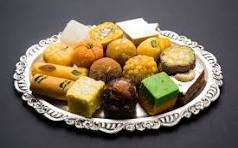
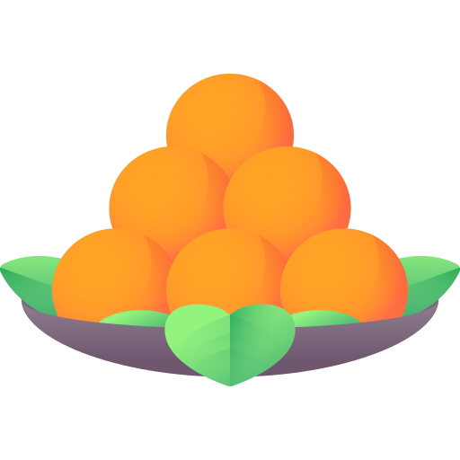
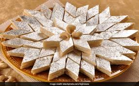
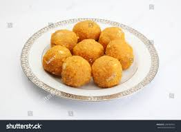
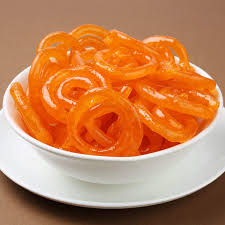
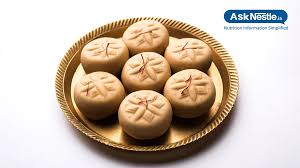
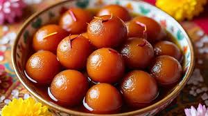
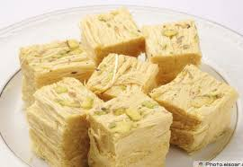

Welcome To Home Page
Home
Contact
Login

😋🍨🍰Taste The magic of Homemade Sweet😋🍨🍰
What We Offer ?
🍭🍬1. Variety of Sweets
 Traditional Indian sweets — Laddu, Barfi, Jalebi, Gulab Jamun, Rasgulla, Peda
Traditional Indian sweets — Laddu, Barfi, Jalebi, Gulab Jamun, Rasgulla, Peda- Bengali delights — Sandesh, Rasmalai, Cham Cham
-  Festival specials — Diwali, Holi, Raksha Bandhan sweets
- Sugar-free sweets — for health-conscious customers
<🍰 2. Custom Orders
- Wedding, birthday, or party sweet boxes 🎁
- Customized packaging with your name/logo
- Bulk orders for corporate events
🚚 4. Delivery & Online Orders
- 🏡Home delivery within your city🏡
- Online ordering via WhatsApp or website
- Contactless delivery option
🍰Our Speaciality
- ✅ Freshly prepared sweets daily
- ✅ Made with pure ghee & high-quality ingredients
- ✅ Hygienic preparation & packaging
- ✅ Traditional recipes with a modern twist
- ✅ Wide variety of sweets for every occasion
- ✅ Customized sweet boxes & gift hampers
our Menu
🍨🧁Welcome to Sweet😋🍨🍰blish, Where every bite is a celebration of tast and tradition.
🤝we bring you freshly prepared sweets made with pure ingredients,authentic recipes and lots of love.
😍😎See Our Different Sweets😍😎
1.Traditional,indian Sweets😋🍨🍰
 > 
traditional sweets are desserts that are deeply rooted in cultural heritage and are often prepared using age-old recipes passed down through generations. They are usually made from natural ingredients like milk, sugar, ghee, flour, nuts, and spices. These sweets are not just delicious but also have cultural and festive significance
2.festival specials
  
mithai, are central to most Indian festivals, symbolizing happiness, prosperity, and the sharing of good fortune. Prepared and exchanged among families and friends, these delicacies are often associated with specific festivals and regional specialties.
To Contact us
<Click Here